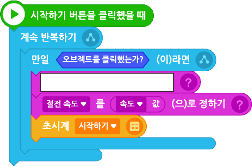

다음 알고리즘과 실행 화면을 참고하여 절전 선풍기 프로그램을 완성해 보자.
알고리즘
(1)숫자 버튼 1, 2, 3을 누르면 ‘속도’ 10, 20, 30이 되도록 하고 초시계를 시작한다.
(2)선풍기는 1, 2, 3 버튼을 누르면 설정된 속도로 회전한다.
(3)멈춤을 누르면 선풍기가 멈추고 초시계가 정지한다.
(4)선풍기가 켜진 후 10초가 지나면 ‘절전 속도’(속도/2)로 바꾸고, 20초가 지나면 멈춘다.
실행 화면
- 오브젝트
-
초록 방
선풍기(날개, 뚜껑)
숫자 버튼(1, 2, 3)
빛
멈춤(글상자)
- 변수
-
속도
절전 속도
[숫자 버튼 1] 시작하기 버튼을 클릭했을 때
아래 블록을 참고하여 프로그램을 작성해 보자.
숫자 버튼 1

이전
다음